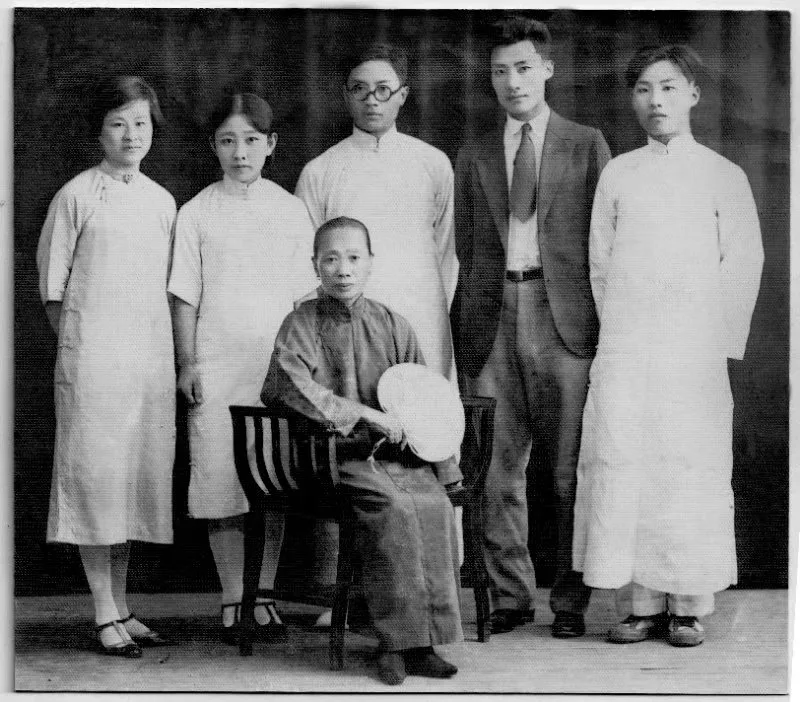
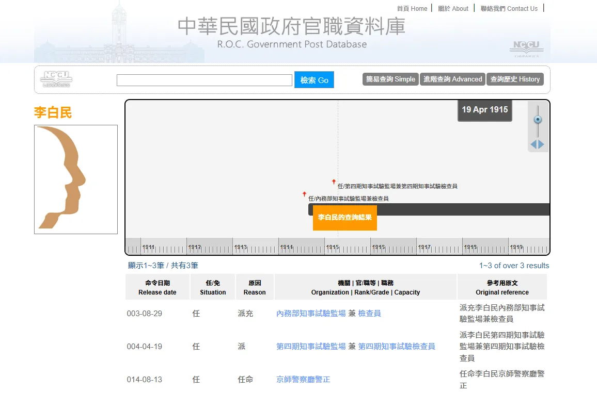
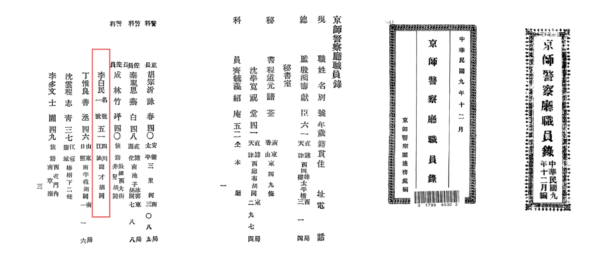
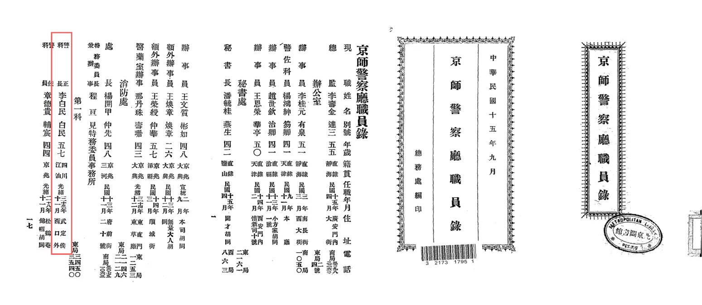
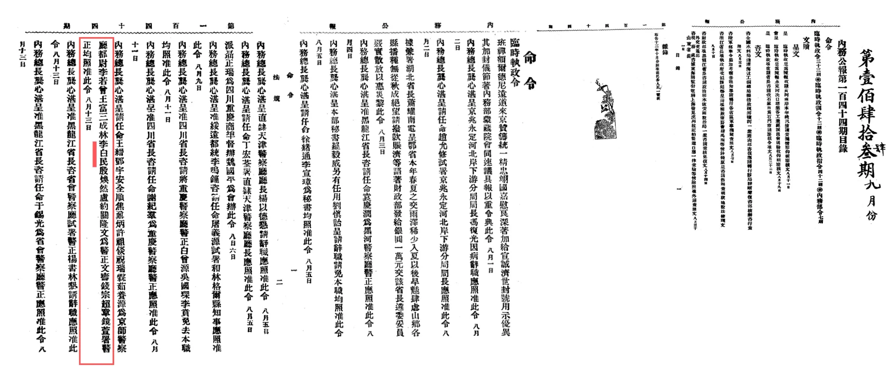
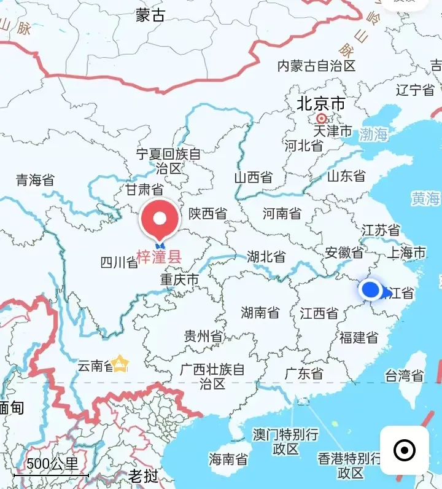
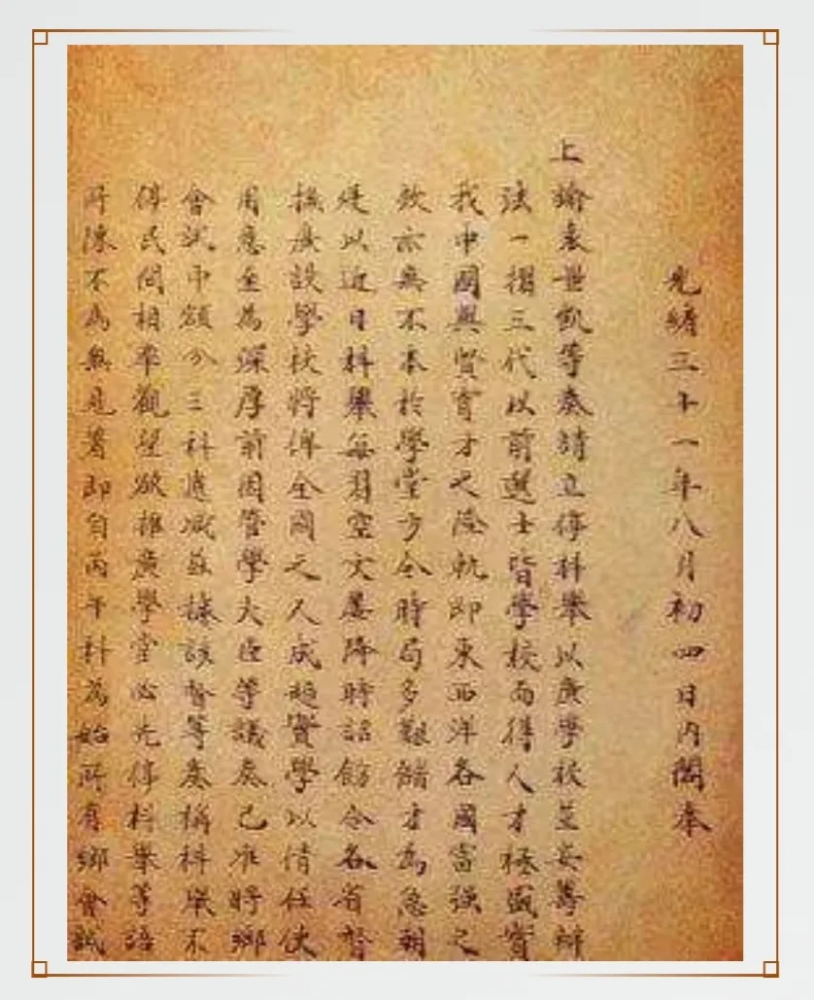
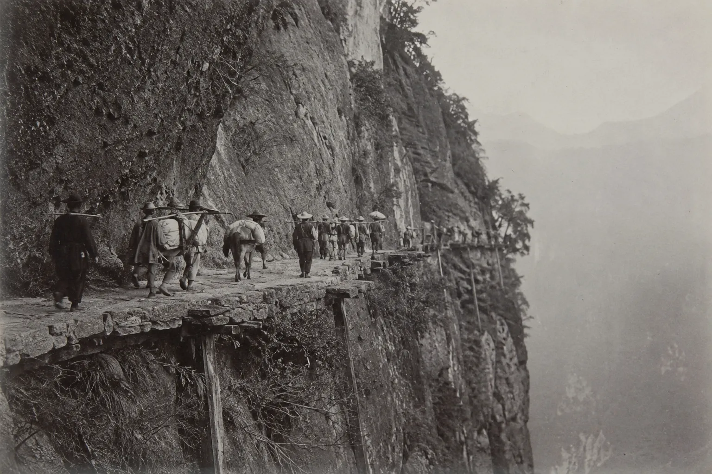

Portrait

This is the only surviving portrait of Li Baimin, painted by his second son Li Youxing. Created between 1928 and 1929, after Li Baimin's death, based on a photograph taken during his lifetime.
1869 (Shuangban, Zitong, Sichuan) — 1928 (Beijing)
Click any photo to enlarge
Portrait
This is the only surviving portrait of Li Baimin, painted by his second son Li Youxing. Created between 1928 and 1929, after Li Baimin's death, based on a photograph taken during his lifetime.
Family Photo · 1928
Madame Xu, c. 18xx (Xuzhou, Zitong, Sichuan) – 1936 (Beijing)

This is the only surviving photograph of Madame Xu, taken in 1928 after Li Baimin's death.
Madame Xu is seated at center; standing behind her, right to left:
Wan'an Cemetery · Beijing
Li Baimin and Madame Xu are buried together at Wan'an Cemetery, Beijing. The grave remains there to this day.
The inscription reads: "Tomb of the late Li Baimin and Madame Xu," erected by "Li Youdu, Li Youxing, and Li Yougan."
Notably, Madame Xu's own given name never appears on the stone — she is referred to only as "Madame Xu." What was the life of this woman, who raised three remarkable sons? It remains a question for her descendants to answer.
Archive




The Li family of Shuangban Township, Zitong County, Sichuan, is said to descend from the Qiang people of the western highlands, who entered Sichuan during the Tang Dynasty, settled, and multiplied over generations into one of the township's leading clans.

In the early twentieth century, a scholar of the clan said goodbye to his wife, who had just given birth to their second son, and set off on foot for the capital. In doing so, this one branch of the Shuangban Li family set out on a path entirely different from the rest of their kin at home.
That scholar was Li Youxing's father — my great-grandfather, Li Baimin. He was the pivotal figure who changed the family's fate. He must have set out around the summer or autumn of 1905. He left no written account of the journey himself.
According to my father's memoir, Fisherman's Evening Song, Li Baimin had already earned the rank of provincial graduate (juren) at home. But for a family of scholar-farmers, pursuing further honors was a matter of great family pride. So he crossed the Daba and Qinling mountains on foot, a two-month journey, to sit the imperial examination in the capital.

But on September 2, 1905, the Emperor had already issued the decree abolishing the imperial examinations. Li Baimin arrived to find nothing to sit for. Years of hard study, climbing through every tier of examination from village candidate to provincial graduate, then the arduous journey to Beijing — and an institution over a thousand years old was simply cancelled. He became, unwittingly, one of the first of Beijing's stranded drifters. We can only imagine how he wept. All we know for certain is that he was stranded in the capital, making a living selling his calligraphy.
"What is lost at sunrise may be recovered by sunset. The examinations were gone — but he had arrived just in time for the great opportunities of the late Qing reforms."
Though the old examinations were gone, he had arrived just in time for the great reforms of the late Qing. Soon a better opportunity came along. Yuan Shikai had established a number of modern government departments that recruited through public examination. My great-grandfather seized the chance, and was admitted into the Beijing Police, serving as clerk to the fire brigade captain. This was Guangxu Year 33 (1907) — less than two years after his arrival in Beijing.
Li Baimin, among the first of Beijing's drifters, not only landed steady government work but rose steadily in rank, and before long could afford a house of his own in the capital. In 1910, he returned to Sichuan to bring my great-grandmother and his two sons to Beijing. My grandfather, Li Youxing, was the second son — just five years old at the time.
In short, my great-grandfather staged, almost as if by divine favor, a rags-to-respectability story in the capital — buying a house, reuniting his family, rising in rank and fortune — completing in just a few years his transformation from a country scholar of Sichuan into a gentleman-official of the capital. In under five years, Li Baimin had secured a foothold in the imperial city, giving his three sons the chance at a modern education, and the means to make their own way in a far wider world.
Sadly, my great-grandfather himself was not granted a long life. In 1928, while my grandfather was studying in France, Li Baimin died, at the age of 60.
When my great-grandmother passed, she was buried alongside my great-grandfather, yet her own given name never appears on the gravestone. My grandfather, in his essay In Memory of Yougan, describes her image as a loving mother — but beyond that, no further record of her survives in the family's memoirs. My uncle Li Yongning tells me her maiden family was from Xuzhou Township, Zitong. What was the life of this woman, who raised three remarkable sons? Did she, too, have moments that were hers alone to shine? These are questions left for us, her descendants, to answer.
The outbreak of the War of Resistance against Japan once again completely changed the fate of our family. My grandfather and his elder brother Li Youdu each returned separately to Sichuan. From then on, no Li family members remained in Beijing. My grandfather founded the Sichuan Provincial Art Academy in Chengdu, while Li Youdu returned to Mianyang and served briefly as headmaster of a middle school there.

"The road to Shu is harder than the road to heaven" — so the poet Li Bai described the hardship of merchants travelling the Shu Road.
The Shu Road was the trade route linking the Guanzhong Plain to the Chengdu Plain, crossing the Daba and Qinling mountains through a maze of peaks and ravines, until travelers felt the entire world had been swallowed by endless mountains — I felt the same, at age ten, riding by car along the Sichuan–Shaanxi highway into Sichuan. So when ancient merchants finally reached the edge of the Chengdu Plain, they could not help but breathe a sigh of relief, and pause to rest. They built a stone archway there, and some simply settled down. The poet Li Bai's family did exactly this, gathering in Qinglian Township, where — alongside continuing trade along the old silk routes — they also became a local family of scholar-farmers, a combination quite common across China.
Li Bai's family had migrated from Central Asia through the Hexi Corridor into Sichuan; the poet was only four years old when they travelled the Shu Road, too young to have written its perils from memory alone — it must have been the tales told again and again by trading kinsmen, of the Taibai bird-track and the sheer cliffs of Jiange, that later let him write his famous poem "The Road to Shu Is Hard."
To this day, the Li clan of Qinglian Township takes pride in being the poet's hometown, and preserves sites said to be his former residence. So when, in the early 1980s, plans arose to build a Li Bai memorial hall in the county seat of Jiangyou instead, the entire township rose in protest: "Li Bai is our township's own son — why build his memorial in the county seat!" The uproar took some time to settle, until someone finally explained: "It's so that Li Bai can be granted non-agricultural residency status" — and at that joke, the grievance finally dissolved into laughter.
About forty kilometers from Qinglian Township lies a small market town called Shuangban Township — the "Shuangban old home" I so often heard my father mention as a child. It cannot be found on ordinary maps, and until I was past sixty I had never been there, nor even thought to trace my roots there. Having moved between big cities with my family since childhood, I had long since lost any sense of native soil. Had it not been for one chance event, I might never have visited it at all.
In 1994, alumni of the former Chengdu Provincial Art Academy, wishing to honor their old headmaster — my father, Li Youxing — spontaneously commissioned a marble statue of him for the Zitong County Cultural Center. Alumnus Guo Qixiang first sculpted a plaster model; fellow alumni pooled funds to buy the stone; and a stonemason, Zhu Xiaoxue, upon learning of the project, volunteered to carve it into marble free of charge.
Zitong County and the alumni association invited my wife Jian and me as guests to the unveiling ceremony — and it was this occasion that let me visit the old home afterward, also hoping to resolve a question that had puzzled me for years.
Ever since school, whenever I filled in "ancestral home" on a registration form, I always wrote "Jiangyou, Sichuan" — matching my father exactly. But by the 1960s, I noticed he had changed his to "Zitong, Sichuan," saying it was because Shuangban Township had been transferred to Zitong County's jurisdiction. When, and why, exactly, he could not say. After much thought, I decided it was better not to stir up trouble — in that era of endless political campaigns, changing one's registered origin could bring unforeseen consequences, even prompt someone to investigate the old home, causing trouble for everyone involved. This trip to Shuangban might finally solve the puzzle.
This trip did turn up some genuinely interesting things.
The old Shuangban Township consisted of just three small streets in a T-shaped layout — yet, for reasons unknown, they belonged respectively to three different counties: Jiangyou, Zitong, and Jiange. The first two fell under Mianyang Prefecture, the last under Guangyuan Prefecture, so kinsmen living next door to one another could, elsewhere, be mistaken for unrelated people of the same surname from different counties entirely. In the early 1950s, land reform there was carried out by separate work teams dispatched from the West Sichuan and North Sichuan administrative offices, with differing pace and methods that caused no end of inconvenience — after which the entire township was finally placed under Zitong for good.
Another curious feature: the sheer number of settlers from other provinces. This tiny township once had four separate guild halls — Shaanxi, Jiangxi, Hu-Guang, and Guangdong — suggesting it had once been a thriving trading town that later declined. In 1958, three of the four guild halls were torn down, their timber hauled to the county seat to build an auditorium for the Great Leap Forward; only the Guangdong hall survived, repurposed for small local workshops. Even so, its massive beams and fine joinery still hint at its former stature.
Long ago, a small hill fortress was also built here — its walls following the contours of the hill, unremarkable in appearance, with no buildings inside, only plots marked out for each family's use. It's said that in times of alarm, the villagers could take shelter there in makeshift huts. No one today can say how it was actually used, or what purpose it once served.
The township's residents were mostly farmers, though many were also skilled stonemasons — the large stone bridge at the street's end is their handiwork. In the 1970s, during the "Learn from Dazhai in Agriculture" campaign, the township built a water-lifting station, and someone proposed making the pipes from stone. The masons duly carved a great pile of hollow stone discs, looking rather like giant abacus beads, hauled them to the pump station, and cemented them together into pipes — and at the first and last pressure test, water sprayed spectacularly along the entire line.
One question I never resolved: whether the Shuangban Lis were also descendants of settlers who had migrated back from Central Asia. Scholars have noted that Central Asia is likely the origin of blood type B, which is common there, growing rarer westward toward Europe and eastward toward East Asia — entirely absent among the indigenous peoples of Japan and the Americas. In my family, type B appears in every generation, along with unusually curly hair. Could this be a gene carried back from Central Asia?
Within Zitong County, the Shu Road connects to the road network of the Chengdu Plain — marking, in effect, the Shu Road's endpoint. The ancients built a landmark here: the Qiqu Temple.
It began as a shrine to a thunder god of the ancient Ba people — an obscure local deity — until Yao Chang, ruler of the Later Qin during the Sixteen Kingdoms period, who proclaimed himself emperor in 386, claimed the god's aid in founding his state. Only then did the shrine's fame spread, earning it a place in the historical text Chronicles of Huayang.
The poet Li Shangyin was deeply skeptical of the legend, writing: "Dismounting, I offer pepper-wine, to greet the god in his white jade hall — how did an iron scepter come to belong to Yao Chang alone?" But by the time the poet raised his doubts, the thunder god had already built too solid a relationship with emperors past for his status to be shaken. It's said that when Emperor Xuanzong fled to Sichuan during the An Lushan Rebellion, the god appeared to him in a dream here and told him: "The rebellion is nothing to fear — it will soon be quelled." Good news duly arrived not long after, and the god was later granted the title "Prince of Deliverance and Compliance."
By the Song Dynasty, a rumor circulated among Daoist circles: "The Jade Emperor has appointed the thunder god to oversee the imperial examinations." This story was endorsed by a Yuan Dynasty emperor, and in the first year of Yuanyou, the court formally bestowed on him the title "Wenchang Dijun," God of Literature. Through the Ming and Qing dynasties, Wenchang shrines sprang up everywhere, commonly known as Zitong temples.
There was one turbulent episode between the Ming and Qing: after Zhang Xianzhong entered Sichuan and proclaimed himself emperor, he honored the thunder god as his own ancestor, turning the Qiqu Temple into the ancestral temple of his Da Xi dynasty, complete with a gilded statue of himself inside. After the Da Xi dynasty fell, his statue was destroyed and the temple reverted to a Wenchang shrine. Zeng Guofan later wrote in its honor: "Where the stars of literature gather their brilliance, Qiqu Mountain stands a sacred realm for a thousand autumns."
A caretaker at the temple, Mr. Xie, told me: "Once the imperial examinations were abolished at the end of the Qing, the thunder god had no more business, and the incense grew cold — until 1977, when the national college entrance exam was restored on the mainland. Many decided the thunder god, too, had had his old post reinstated, back in charge of admissions, and the incense grew busy again. Every summer, worshippers seeking blessings come without end — some have even asked him to reveal the exam questions in advance." He paused, then pointed to the two child attendants flanking the god's statue: "That, they cannot do! Those two are Wenchang's secretaries — one deaf, one mute — utterly loyal, and utterly impartial."
Even so, the worshippers remain convinced: heaven has the same weaknesses as earth, and as long as you know the right channels, you need never worry about being overlooked. So the incense burns on, and so do all manner of prayers for good fortune!
Most residents of Shuangban Township descended from settlers who arrived from other provinces in the early Qing; by comparison, the Li family counted as a long-established local family of scholar-farmers. My grandfather Li Baimin followed the old tradition — teaching at the local school while also preparing for the imperial examinations. In one year toward the end of the Qing, brimming with confidence, he walked north to the capital over more than two months to sit the metropolitan examination, accompanied by two young attendants. But just as he settled in the capital to make his final preparations, the court abolished the examinations ahead of schedule — one of the most consequential reforms in modern Chinese history, and a heavy blow to the traditional path of advancement. Even so, he did not return home, choosing instead to stay in the capital and seek another way forward.
Amid the Qing court's reform drive of 1905, new measures and new institutions kept emerging, and he found a position at the newly established Beijing Police, becoming a minor civil servant. In 1910 he returned home to move his entire family to Beijing — a decision that completely changed the fate of his descendants.
My father was five at the time, and still remembered the journey: first a stretch overland by sedan chair, then a small wooden boat to Chongqing, transferring to a larger junk to Hankou. From there one could have taken the train to Beijing, but to save money we went instead by steamer to Shanghai, then by ocean liner toward Tianjin — except the port of Tianjin was frozen solid in the depths of winter, so the ship diverted to Qinhuangdao, where passengers disembarked and took the train the rest of the way to Beijing. We had reasonably comfortable seats for the journey, and plenty of idle time; my father had bought a set of picture-character primers, and I discovered that pictures could help me learn characters, which sparked my interest in images. I had known only the numbers one through ten before — by the end of that nearly two-month journey, I had learned to recognize more than three hundred characters.
The passage above is taken from my father's own notes.
Grandfather was an extremely frugal man — perhaps overly so; he wouldn't even let the family freely eat their own home-pickled carrots. At the same time, he worked hard to increase his income: he had fine calligraphy, for instance, and earned extra money writing New Year's couplets for others during festivals. Over a decade later, he managed to buy a small courtyard house at No. 38 South Shuncheng Street, finally putting down roots in the capital. Yet he wasn't satisfied with this, and kept striving for greater wealth, hoping all three of his sons would pursue careers in industry and commerce — hopes that, one after another, all came to nothing.
He heard from a friend that a Russian bank was selling rubles internally at rock-bottom prices, and had someone buy him several bundles through personal connections. The very next day, news of the Russian Revolution arrived, and his substantial savings turned into a stack of colorful worthless paper. Five years later, persuaded again by a friend, he invested in a coal mine in Mentougou; about six months later the mine went bankrupt after losing a dispute over mining rights, and years of savings were wiped out once more.
These failures pained him deeply, but what hurt him more was that all three sons seemed almost to take satisfaction in his misfortune. Though the three brothers were each eight years apart in age and understood the matter to varying degrees, they all grumbled behind his back: "Hmph! Money that should be spent on us, he'd rather keep for swindlers to take!" Indeed, the generational gap between them and their father proved impossible to bridge.
My uncle Li Youdu was admitted to the Foreign Languages Department at Peking University, and his classmates from the south often visited grandfather's home. All of them were students of the May Fourth era, and all had taken part in demonstrations. Though grandfather often disagreed with their views, he still regarded them as fellow sons of his home province, and they in turn considered him a kindly elder.
My father, however, always felt grandfather was excessively strict — strict to the point of unreasonableness — often punishing the children over trivial matters and refusing to hear their reasonable requests. In 1926, when my father asked for financial support to study in France, grandfather flatly refused, sparking a great quarrel between father and son. Grandfather eventually relented, but only after making my father kneel and admit his fault! Years later, recalling the episode, my father said grandfather had still loved him after all — their conflicts often arose from mutual misunderstanding, and from an elder generation too impatient to listen.
While studying abroad, my father once went on an internship to Dijon, France's textile hub, and in a letter home casually wrote that he was going to "Di Rong" (using unfamiliar characters that could also be misread). Grandfather, alarmed by the letter, wrote back at once urging him to be extremely careful about wherever such a place might be.
In 1928, grandfather fell ill and died. My father took leave and travelled home via Siberia to attend the funeral; passing through Soviet Russia left a deep impression on him. Moscow's streets were full of vitality — people lived in poverty yet remained optimistic; many rode the trams to work barefoot, and none of the listlessness so familiar in China at the time was to be seen. He also took in Siberia's boundless wilderness and forests, and the vast blue expanse of Lake Baikal — that raw, rugged, magnificent scenery.
In the 1950s, whenever my father visited Beijing he would go to Wan'an Cemetery to pay his respects. He went again in the mid-1970s, and came home to tell my mother, sadly, that the "Learning from Dazhai" irrigation campaign had dug canals through the grounds, leaving the cemetery unrecognizable and the grave impossible to find.
In 1987, on a business trip to Beijing, I remembered this and decided to go see for myself. June 3rd was brutally hot; in the early afternoon I set out from Peking University, borrowing my cousin Guangcheng's bicycle and straw hat, and steeled myself for the ride.
Past the Summer Palace, traffic thinned out noticeably. Further on, as far as I could see, there wasn't a pedestrian or a vehicle on the road, nor a soul in the fields — everything under the blazing sun felt strangely desolate, and I seemed to slip into a dream, as if I had entered some unreal world, pedaling along a road with no end and no destination. I have no idea how long I rode before a car horn behind me jolted me back — I pulled to the side to let it pass, stopped to steady myself, and a little further on, the cemetery gate finally came into view.
I was received by a kindly old caretaker. After listening carefully to my purpose, he asked: "Did you bring any documentation?" "No." "Then do you know the plot number?" "No." He looked troubled. "The cemetery is very large — a name alone is hard to trace. Have you been here before? Was there anything distinctive near your grandfather's grave?"
I thought back slowly. Yes — in the spring of 1956 my father had brought me here. The place had been quite desolate then, but he knew the path well and found the spot quickly; we stood in silence before the grave for a while, spoke of old times, and left. As for anything distinctive — everywhere was overgrown grass and uneven dirt paths, no large trees, no especially grand tombs. On our way back we passed a small grove of trees. Wait — wait — yes! In that grove I had seen a gravestone: "Tomb of Mr. Li Shouchang" (Li Dazhao's original name), unadorned, surrounded by the same overgrown grass, clearly untended for a long time.
"My grandfather's grave is not far from Li Dazhao's."
"Ah!" The old caretaker pulled out a large ledger, put on his reading glasses, and searched carefully, then looked up at me. "What was your grandfather's work?" "The Beijing Municipal Police." "Then that's it! Plot Tu, Section Cheng, Number 1." "Was that area badly damaged by the canal construction?" I asked, still uneasy.
He explained in detail: "The diversion canal didn't run through the cemetery itself, but the area became a dumping ground for excavated earth. And then there was the great destruction of 1966 — many gravestones were smashed. It took us considerable effort to clear it all up." "Your grandfather's stone wasn't smashed, but it had been knocked over, and quite a few chips had come off. We've repaired all of that — the restoration fee is—" My heart skipped; surely it would be a large sum! He seemed to sense my worry. "Don't worry, you can pay later if needed." "How much is it?" "Thirty-five yuan." Relieved, I reached for my wallet.
"Good — I'll give you a receipt, which will serve as your documentation from now on." Once everything was settled, he asked if I wanted someone to show me the way; I declined with thanks and went to look for it myself — with the plot number in hand, it was easy enough to ask my way there.
The cemetery had changed a great deal — the paths were now clean and the shrubs flourishing, and Li Dazhao's grave had been built into a proper memorial garden. Grandfather's gravestone stood undamaged, the names of grandfather, grandmother, and my father's three brothers all clearly legible. Following my father's habit, I stood before the grave in silence for a moment before leaving. By then the day had begun to cool, and I made it back into the city just before dusk.
His Descendants
Click outside the image, press Esc, or tap the close button · pinch to zoom on mobile